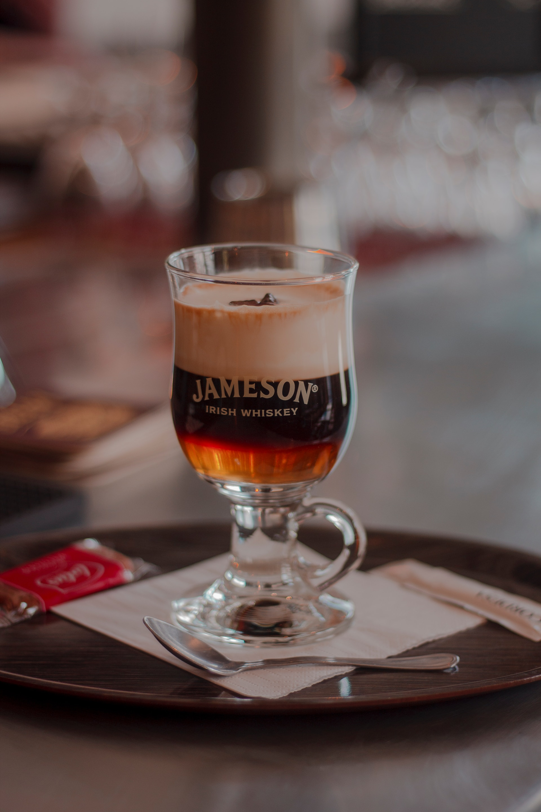

Irish Coffee

Ingredients
- 16 oz.hot water
- 2 tsp.light brown sugar
- 1 c.brewed coffee
- 2 oz.Irish whiskey (such as Jameson)
- 1/2 c.heavy cream for topping
- Chocolate shavings, for garnish
Instructions,
Time to prepare: 10 Minutes
- Step 1: Fill 2 mugs with hot water and let sit 2 minutes. Pour out water and add 1 teaspoon light brown sugar to each mug. Pour over hot coffee and stir to dissolve sugar, then pour in whiskey.
- Step 2: In a separate bowl with an electric mixer or by hand, whisk cream until soft peaks form. Cream should be thick but still pourable. Top coffee with cream by gently pouring over the back of a warm spoon to form a thick layer on top of coffee. Garnish with chocolate shavings.
Enjoy your Irish Coffee